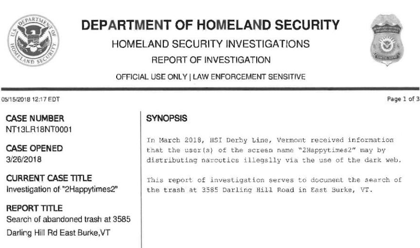
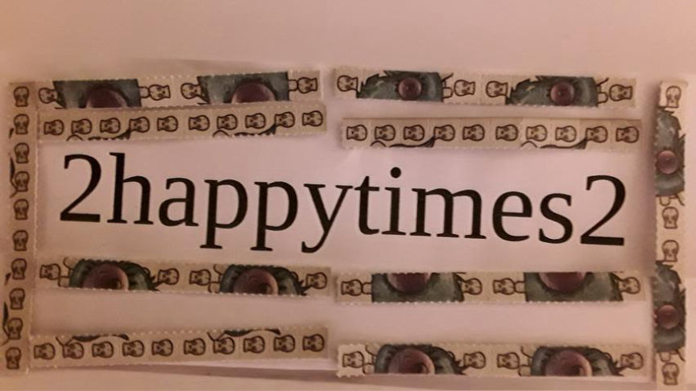
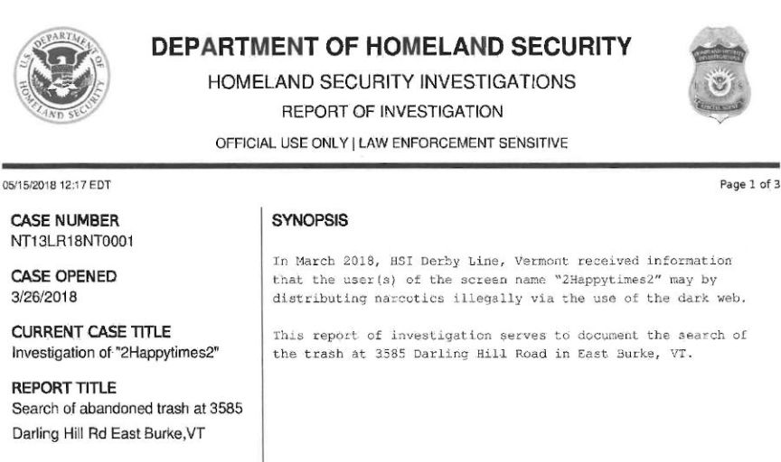
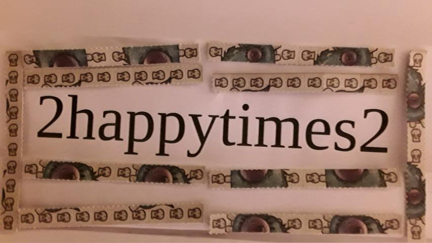

Darkweb Vendor 2HappyTimes2 Sentenced to Five Years in Prison
~2 min read | Published on 2019-08-02, tagged Darkweb-Vendor, Drugs, Money-Laundering, Sentenced using 398 words.
Sam Bent, 33, of Saint Johnsbury, Vermont was sentenced to five years in prison for selling controlled substances on the darkweb under the username “2HappyTimes2” and for three counts of money laundering in connection with the drug trafficking conspiracy.
According to an announcement from the Office of the United States Attorney for the District of Vermont, Chief United States District Judge Geoffrey Crawford sentenced Sam Bent to five years in prison and three years of supervised release for three counts of money laundering and one count of conspiracy to distribute controlled substances via the darkweb.
From 2017 until his arrest in April 2018, Sam Bent sold LSD, MDMA, marijuana, and other substances on the darkweb with his cousin Djeneba Bent. Homeland Security Investigations (HSI) led the investigation into Bent as a part of Operation Dark Gold–an operation wherein HSI had taken control of a darkweb money launderer’s account and used it to collect the addresses of prolific darkweb vendors. Bent was one of the 35 darkweb vendors caught during the operation.
Bent sent the undercover law enforcement officers bitcoin and other cryptocurrencies in exchange for US currency. The undercover law enforcement officers shipped the currency to addresses under Bent’s control such as his home address in East Burke, Vermont, as well as P.O. Boxes located throughout Vermont. Law enforcement conducted physical reinsurance at the address Sam shared with his cousin, Djeneba. Investigators watched the duo drop packages off at a multiple Post Offices in the surrounding area.

Special Agents worked with the trash collectors who worked the route that covered Bent’s residence.
[Agents] examined the contents of the two thrash bags and discovered, among other items, three rubber gloves, and three opened shipping envelopes from Spain. One of the three envelopes was addressed to Sam Bent at P.O. Box 22. A clear plastic baggie containing an unknown white residue was also discovered. The baggie and residue were transported to the Vermont Forensic Laboratory for testing.
In April 2018, HSI and the United States Postal Inspection Service searched Bent’s residence and placed him under arrest.
At sentencing, Judge Crawford “noted the need to deter others from engaging in the illegal online distribution of controlled substances.” Djeneba Bent also received a sentence of three years probation for her role in the conspiracy.
The 2happytimes2 case warrants a follow-up article with details of the investigation. Attached is an interesting exhibit from the case.
According to an announcement from the Office of the United States Attorney for the District of Vermont, Chief United States District Judge Geoffrey Crawford sentenced Sam Bent to five years in prison and three years of supervised release for three counts of money laundering and one count of conspiracy to distribute controlled substances via the darkweb.
A Listing for 2happytimes2
From 2017 until his arrest in April 2018, Sam Bent sold LSD, MDMA, marijuana, and other substances on the darkweb with his cousin Djeneba Bent. Homeland Security Investigations (HSI) led the investigation into Bent as a part of Operation Dark Gold–an operation wherein HSI had taken control of a darkweb money launderer’s account and used it to collect the addresses of prolific darkweb vendors. Bent was one of the 35 darkweb vendors caught during the operation.
Bent sent the undercover law enforcement officers bitcoin and other cryptocurrencies in exchange for US currency. The undercover law enforcement officers shipped the currency to addresses under Bent’s control such as his home address in East Burke, Vermont, as well as P.O. Boxes located throughout Vermont. Law enforcement conducted physical reinsurance at the address Sam shared with his cousin, Djeneba. Investigators watched the duo drop packages off at a multiple Post Offices in the surrounding area.

A Listing for 2happytimes2
Special Agents worked with the trash collectors who worked the route that covered Bent’s residence.
[Agents] examined the contents of the two thrash bags and discovered, among other items, three rubber gloves, and three opened shipping envelopes from Spain. One of the three envelopes was addressed to Sam Bent at P.O. Box 22. A clear plastic baggie containing an unknown white residue was also discovered. The baggie and residue were transported to the Vermont Forensic Laboratory for testing.
In April 2018, HSI and the United States Postal Inspection Service searched Bent’s residence and placed him under arrest.
At sentencing, Judge Crawford “noted the need to deter others from engaging in the illegal online distribution of controlled substances.” Djeneba Bent also received a sentence of three years probation for her role in the conspiracy.
The 2happytimes2 case warrants a follow-up article with details of the investigation. Attached is an interesting exhibit from the case.